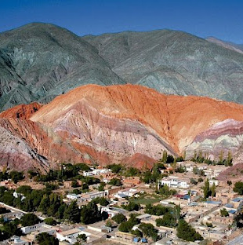
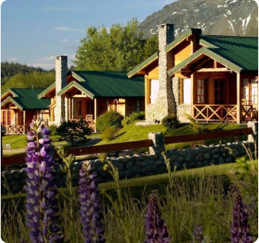

San Martín de los Andes, un tesoro oculto entre montañas y lagos, espera ser descubierto. Con su magnífica combinación de naturaleza virgen y encanto cultural, esta ciudad te invita a explorar cada rincón con asombro y deleite.
PATAGONIA ARGENTINA
San Martín de los Andes
El Bolsón
El Bolsón, un refugio entre las montañas y los bosques, te espera con los brazos abiertos. Este pintoresco pueblo en la Patagonia argentina te invita a sumergirte en su atmósfera relajada y su estilo de vida alternativo.
Santa Cruz
Perito Moreno, un destino único en la vasta y majestuosa región de Santa Cruz, te espera con paisajes que te dejarán sin aliento. Enclavado en el corazón de la Patagonia, este pequeño pueblo es el punto de partida perfecto para explorar la belleza natural de la zona.
NORTE GRANDE ARGENTINO
Misiones
Misiones, una tierra de contrastes y maravillas naturales en el noroeste de Argentina, te invita a explorar su fascinante historia y biodiversidad única. Conocida por sus imponentes ruinas jesuíticas y sus exuberantes selvas tropicales, esta provincia te sorprenderá en cada esquina.

Jujuy
Jujuy, una joya escondida en el noroeste argentino, te invita a descubrir su rica herencia cultural y su impresionante belleza natural. Con sus paisajes deslumbrantes, su patrimonio histórico y su vibrante cultura, esta provincia te cautivará desde el momento en que pongas un pie en ella.
BUENOS AIRES
Buenos Aires
Buenos Aires, la vibrante capital de Argentina, te espera con sus calles llenas de historia, su cultura rica y diversa, y su energía inigualable. Conocida como la "París de América del Sur", esta ciudad cosmopolita ofrece una mezcla única de elegancia europea y pasión latina que la convierte en un destino fascinante para visitantes de todo el mundo.
Actividades

- San Martín de los Andes
- Rafting

- El Bolsón
- Trekking
Hoteles

- Amonite Apart & Spa
- San Martín de los Andes

Ver más
- Cabañas las Montañas
- El Bolsón